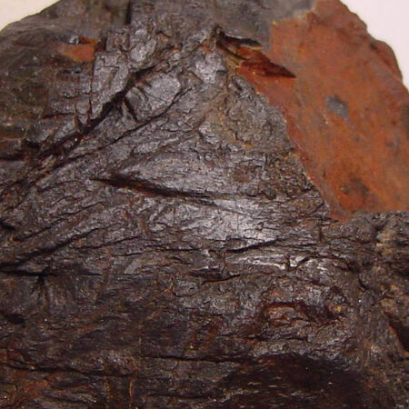

Tantal
| Erz | Tantalit, typ. 20–55 % Ta₂O₅ |
|---|---|
| Metall | Tantalmetall 99–99,97 % |
| Oxid | Tantaloxid (Ta₂O₅) 99–99,95 % |
| Schrotte | Ta-haltige Schrotte und Rückstände, z. B. Tantalanoden, Tantalkondensatoren, Tantalblechabschnitte |

Start / Materialien
Vierzehn Elemente in den Formen Erz und Konzentrat, Metall, Oxid und Verbindung sowie Schrott und Rückstand. Angegeben sind typische Gehalte und Reinheiten, die genauen Werte erhalten Sie je Charge auf Anfrage.
Offene Frage Ist das Sortiment aktuell und vollständig? Auf der bisherigen Website steht „usw.“.
| Erz | Tantalit, typ. 20–55 % Ta₂O₅ |
|---|---|
| Metall | Tantalmetall 99–99,97 % |
| Oxid | Tantaloxid (Ta₂O₅) 99–99,95 % |
| Schrotte | Ta-haltige Schrotte und Rückstände, z. B. Tantalanoden, Tantalkondensatoren, Tantalblechabschnitte |

| Erz | Columbit, typ. 50–60 % Nb₂O₅ |
|---|---|
| Metall | Niobmetall 99–99,9 % |
| Oxid | Nioboxid (Nb₂O₅) 99–99,95 % |
| Schrotte | Nb-haltige Schrotte und Rückstände |
| Erz | Wolframit, typ. 65–75 % WO₃ |
|---|---|
| Oxid | Wolframoxid (WO₃) |
| Schrotte | Wolframcarbid-Schrott (WC), z. B. Wendeschneidplatten · W-Metallschrott und W-haltige Rückstände |
| Erz | Kassiterit (Zinnerz), typ. 70–75 % Sn |
|---|---|
| Metall | Zinnmetall 99,93 % |
| Schrotte | Sn-haltige Schrotte und Rückstände |
| Verbindung | APR (Ammoniumperrhenat), 69,2–69,4 % Re |
|---|---|
| Metall | Rheniummetall 99,5–99,9 % |
| Schrotte | Re-haltige Schrotte, Legierungen und Rückstände |
| Verbindungen | MoS₂, MoO₃ |
|---|---|
| Metall | Molybdänmetall und -schrotte |
| Rückstände | Mo-haltige Rückstände |
| Metall | Cobaltmetall 99,5–99,7 % |
|---|---|
| Schrotte | Co-haltige Schrotte, Legierungen und Rückstände |
| Schrotte | Ni-haltige Schrotte, Legierungen und Rückstände |
|---|
| Metall | Zirkoniummetall 99–99,9 % |
|---|---|
| Legierungen | Zr-Nb, Zr-Hf und kristallines Zr |
| Schrotte | Zr-Schrotte und Rückstände |
| Metall | Hafniummetall 99–99,9 % |
|---|---|
| Schrotte | Hf-Schrotte und Rückstände |
| Metall | Galliummetall 4N–6N |
|---|---|
| Schrotte | Galliumschrott |
| Metall | Germaniummetall polykristallin, 50 Ohm |
|---|---|
| Oxid | Germaniumdioxid (GeO₂) |
| Schrotte | Ge-haltige Schrotte und Rückstände |
| Schrotte | Pt-haltige Schrotte und Rückstände, z. B. Katalysator- und Elektronikabfälle |
|---|
| Schrotte | Pd-haltige Schrotte und Rückstände, z. B. Katalysator- und Elektronikabfälle |
|---|
Anfrage
Nennen Sie uns Element, Form, Qualität und Menge. Wir melden uns persönlich.
Anfrage stellen